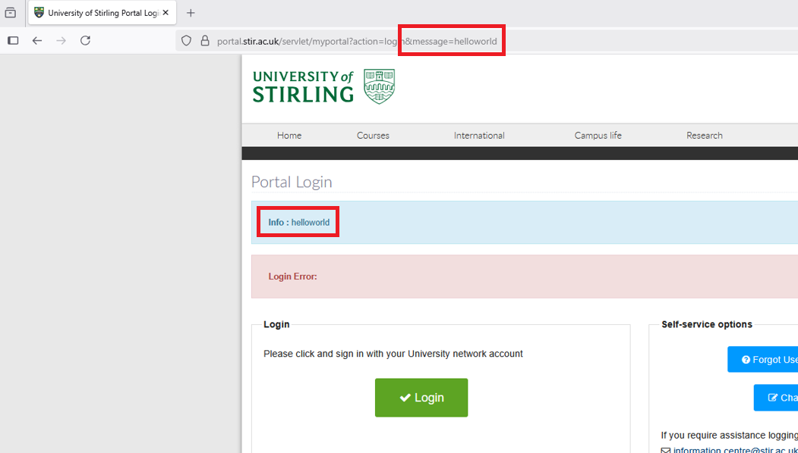
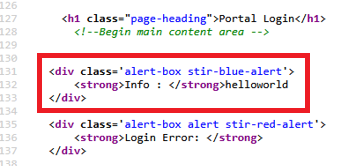
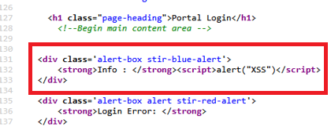
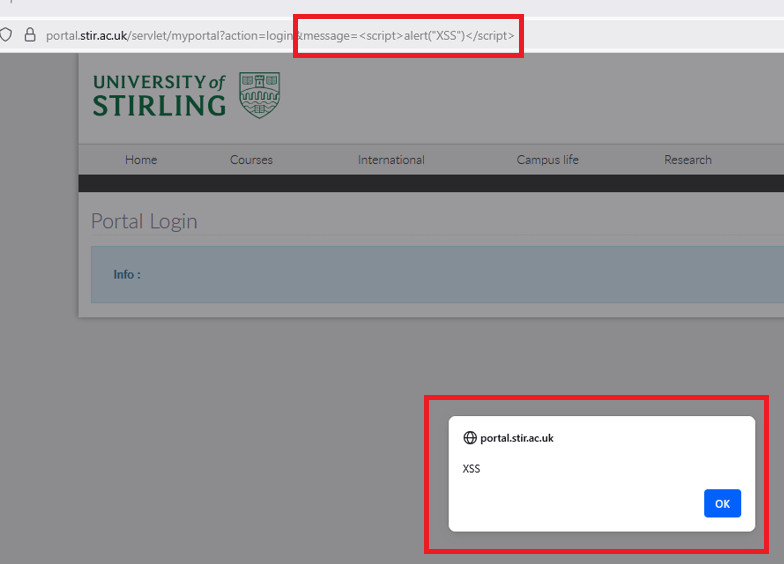
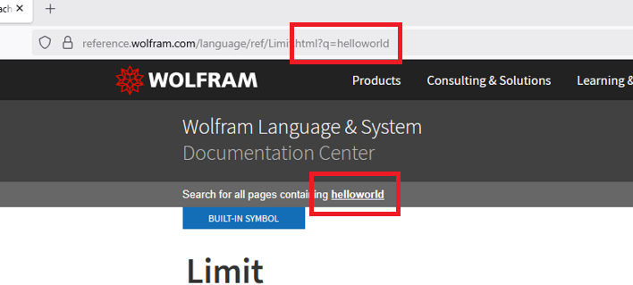
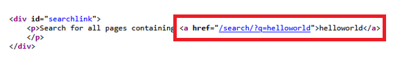
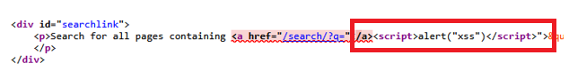
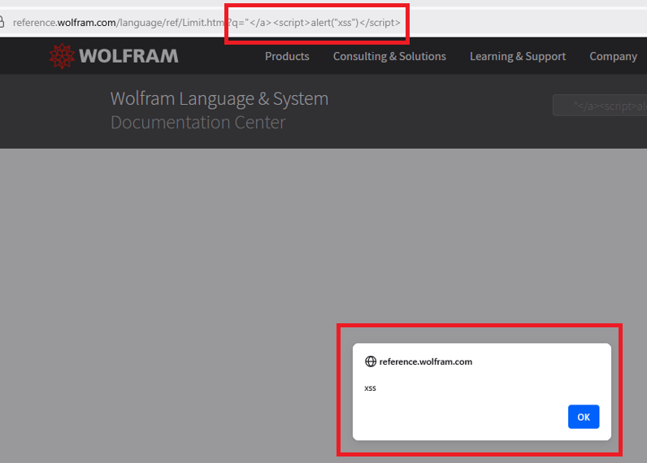
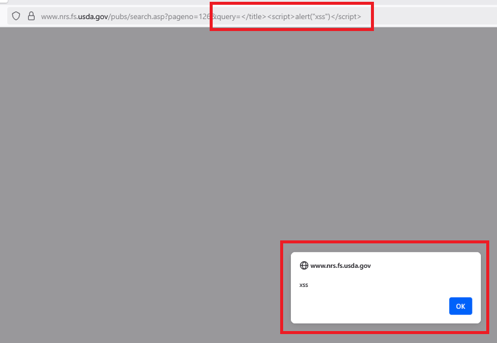

xssprober: Blazing-Fast XSS Detection
DISCLAIMER
The information provided in this post is intended solely for educational purposes. The author assumes no responsibility or liability for any misuse, or unlawful activity resulting from the use of the information described herein.
What is Cross-Site Scripting
Cross-Site Scripting (XSS) is arguably one of the easiest web exploits to understand, which is why it’s often among the first vulnerabilities cybersecurity enthusiasts encounter. In a nutshell, XSS occurs when a web application accepts user-supplied input and renders it on a page without properly escaping or sanitizing it. This oversight enables attackers to inject malicious JavaScript that executes in the victim’s browser.
There exist three primary types of XSS, namely: Reflected, Stored, DOM-Based. We will now provide a detailed example of reflected XSS.
If you’re interested in learning more regarding XSS vulnerabilities, click here.
Reflected XSS
Reflected XSS occurs when malicious input from a user is immediately “reflected” by a web application back to the browser without proper validation or escaping. This input is often included as a query parameter in a URL, but it can also come from a form submission or other user-supplied data.
Example
Consider a search feature on a website that shows the search term in the results page. Furthermore, suppose the search term is passed to the web application via the query parameter, q. Thus, we could consider the following URL:
https://example.com/search?q=dogs
To yield the following response:
<html>
<!-- omitted for brevity -->
<h2>Search Results For: dogs</h2>
<!-- omitted for brevity -->
</html>
If the application does not properly sanitize the query parameter q, an attacker could craft a URL with malicious input. For example:
https://example.com/search?q=><script>alert("XSS")</script>
Then, we expect the following response:
<html>
<!-- omitted for brevity -->
<h2>Search Results For: ><script>alert("XSS")</script></h2>
<!-- omitted for brevity -->
</html>
In this case, the attacker’s input closes the <h2> tag prematurely (>), and the <script> tag executes JavaScript in the user’s browser.
Automated Detection of XSS
Manually testing for XSS vulnerabilities can be tedious, particularly in large web applications with dozens or even hundreds of input fields. Fortunately, XSS is relatively easy to detect using automated tools. Scanners can quickly inject payloads and identify unescaped input reflections that may allow malicious JavaScript to execute.
A Simple XSS Detection Algorithm
Currently available XSS scanners typically feature the following key stages:
(1) Crawling the Web Application
This stage involves discovering all available URLs, forms, and input fields that accept user-supplied data.
(2) Injecting Payloads
For each input field, the scanner injects a series of XSS payloads. These payloads are designed to test how the web application handles potentially malicious input. Some example payloads being:
"x'y</iMg<script>alert(1)</script><img src=x onerror=alert(1)>
(3) Monitoring the Response
After submitting a payload, the scanner will analyse the http response to determine if the payload executed in the browser. For reflected XSS, this usually involves checking if the payload appears unsanitized in the returned html.
Current Tooling
There are already countless open-source tools for detecting XSS vulnerabilities, namely:
A quick glance at their source will reveal that they more or less implement the algorithm detailed above.
Limitations of Current Tooling
Although the currently available tools are extremely powerful, they are not without their drawbacks. The main bottleneck I discovered whilst using them is speed. Most scanners will test input fields one parameter at a time, sending individual requests for every payload against every field. Therefore, the total scan time can be well approximated by:
$$ \text{scan\_time} \approx (\text{req\_time} \cdot \text{payload\_num}) \cdot (\text{hidden\_param\_num} + \text{exposed\_param\_num}) $$
Where:
- scan_time := the total time to complete the scan(s),
- req_time := the average round-trip time for a single http request(s),
- payload_num := the number of probes tested per parameter,
- hidden_param_num := the number of hidden parameters to test
- exposed_param_num the number of visible parameters to test.
This approximation shows that the total scan time grows linearly with both the number of parameters and payloads. This doesn’t scale well. In large web applications with hundreds of endpoints and dozens of input fields, or user’s wishing to “mass scan” multiple targets, this approach can quickly become time-consuming.
Additionally, just the sheer amount of network traffic generated by these scanners alone can easily result in the triggering of a Web Application Firewall (WAF) or other security mechanisms. In fact, a lot of bug bounty programs completely ban the use of automated detection tools for this very reason.
This brings us to the main point of this blog post, xssprober.
xssprober
xssprober is an open-source penetration testing tool designed to automate the detection of XSS vulnerabilities. The primary philosophy of xssprober is to scan as much as possible, as quickly as possible. It attains this goal via techniques such as Asynchronous Programming and Single-Request-Muti-Parameter-Probing (more on this shortly). Results obtained from xssprober can be piped into “heavier” tooling such as XSStrike. xssprober only detects vulnerabilities, it will not exploit them.
You can access the source code of xssprober here.
Single Request Multi Parameter Probing
A key feature in xssprober is its ability to probe multiple parameters simultaneously with a single http request, rather than iterating over one parameter at a time. This technique will be referred to as Single Request Multi Parameter Probing (SRMPP). We will now cover an example scan, detailing how xssprober utilises SRMPP.
Example
Consider a search feature on a website that enables the user to input various query parameters to aid in shortening the number of results. In this case, let’s assume the website uses and exposes the following query parameters:
- q := The main query string (e.g. a product name),
- category := Filter results down to a specific category (e.g. “books”),
- sort := A parameter to sort the results (e.g. “price-acs”).
(1) Stage 1
First, xssprober will identify the three query parameters and for each payload, produce a unique version of said payload per parameter. This information is stored in a dictionary, namely:
payload_to_param =
{
"q": "x'y</iMguIjanHeQ",
"category": "x'y</iMglOmJsEey",
"sort": "x'y</iMgkAmwkfhs",
"limit": "x'y</iMgaJaaUirk",
"filter": "x'y</iMgLoakwpda",
}
NOTE: It is important to notice that xssprober has also appended two potential “hidden” parameters: limit and filter. These parameters may exist on the “backend” of the site, but are not exposed in any documentation or html.
(2) Stage 2
Next, xssprober will construct a new URL featuring the injected parameter values and send this to the web application:
https://example.com/search?q=x'y</iMguIjanHeQ&category=x'y</iMglOmJsEey&sort=x'y</iMgkAmwkfhs&limit=x'y</iMgaJaaUirk&filter=x'y</iMgLoakwpda
(3) Stage 3
Once the web application has responded, xssprober will scan said response for instances of the injected payloads. If any such instance is found, xssprober will refer to its mapping table (payload_to_param) to find which parameter was responsible for the reflection and log it as potentially vulnerable to XSS.
If it wasn’t already clear, this identifies potential XSS vectors because if the payload/probe wasn’t escaped or tampered with in some way, xssprober will find it somewhere in the web application’s response. For example, consider the following html:
<html>
<!-- omitted for brevity -->
<title>Search Results For: x'y</iMguIjanHeQ</title>
<!-- omitted for brevity -->
<h2>Category: x'y</iMglOmJsEey</h2>
<!-- omitted for brevity -->
</html>
Observe that only the parameters q and category were reflected. Furthermore, notice that parameter q was html-encoded, whereas category was not. Thus, category is a prime candidate for XSS, and xssprober will identify this.
Scan Time Approximation
It should be intuitive to realise that xssprober already beats the currently available tooling (e.g. XSStrike) in terms of scan speed on an order of magnitudes. However, similar to the approximation we made regarding the scan time of “traditional” tools (here), we can make a similar approximation for the scan time of xssprober:
$$ \text{scan\_time} \approx \text{payload\_num} \cdot \text{req\_time} $$
Where:
- scan_time := the total time to complete the scan(s),
- req_time := the average round-trip time for a single http request(s),
- payload_num := the number of probes tested per parameter.
Thus, xssprober’s scan time is independent of the number of parameters. This implies that xssprober will scale well whenever a large number of parameters are present (e.g. a large number of hidden parameters).
Disadvantages
So far, we’ve treated xssprober as if it were the “holy grail” of XSS detection. In reality, it is just doing simple input reflection detection. I will now list two primary issues regarding xssprober’s approach:
(1) Undefined Website Behaviour
Injecting input payloads into request parameters often leads to unpredictable behaviour. For instance:
- 4xx-5xx status codes
- Redirections
- etc
Furthermore, some of these issues may only occur on certain parameters. Therefore, testing all parameters within a single http request, as per SRMPP, could result in xssprober missing XSS vulnerabilities. This could be mitigated by either comparing results to a baseline (still risky however), or falling back to traditional methods (e.g. testing one parameter at a time).
(2) Not Context-Aware
As of writing this post, xssprober features no “context-awareness” as it is based on finding unescaped payloads in the html response. This means it has no idea if the reflection is in a position where escaping “rules” differ, or if there is some clever payload which can execute despite being sanitized by the web application.
Conclusion
Overall, I believe xssprober is a valuable tool for anyone looking to quickly scan multiple targets at scale. I’ve personally leveraged its speed for exactly this purpose. It’s also well-suited for those interested in discovering XSS vulnerabilities in hidden parameters, as xssprober can probe as many parameters as the target web application will accept in a single http request.
If you’ve read this far, thank you for your time and interest. Also, if you have any feedback, feel free to make a pull request or email me.
Examples From The Wild
In this section, we will cover some real-world XSS vulnerabilities discovered by xssprober.
University of Stirling
Overview
- Vulnerable URL: https://portal.stir.ac.uk/servlet/myportal
- Vulnerable Parameter: message
- PoC Payload:
<script>alert("XSS")</script>
Walkthrough
xssprober successfully identified the hidden parameter message. Furthermore, it discovered that the value of message was reflected directly in the html response without any validation or sanitization:

Inspecting the page source, we see that the message parameter is reflected inside a <div> tag:

Since the parameter is placed directly within the div, we can safely inject a <script> tag into message without breaking any html structure or needing to escape any parenting html tags:

After injecting the payload, rendering the page in a browser confirms successful execution of our JavaScript:

Timeline
- 13/08/2025 Vulnerability Discovered
- 13/08/2025 Vulnerability Disclosure
- 14/08/2025 Vulnerability Fixed
Wolfram Alpha
Overview
- Vulnerable URL: https://reference.wolfram.com/language/ref/Limit.html
- Vulnerable Parameter: q
- PoC Payload:
</a><script>alert("XSS")</script>
Walkthrough
xssprober discovered that the value of parameter q was reflected directly in the html response without any validation or sanitization:

Inspecting the page source, we see that the q parameter is reflected twice inside a <a> tag:

Because our input is placed within an <a> tag, we must first escape it via closing the anchor tag prematurely. Then, we may inject a <script> tag to execute JavaScript code:

NOTE: In retrospect, the escaping of the anchor tag should have used a simple closing angle bracket. But this worked regardless.
After injecting the payload, rendering the page in a browser confirms successful execution of our JavaScript:

Timeline
- 11/07/2025 Vulnerability Discovered
- 11/07/2025 Vulnerability Disclosure
- 14/07/2025 Vulnerability Fixed
United States Department of Agriculture (USDA)
Overview
- Vulnerable URL: https://www.nrs.fs.usda.gov/pubs/search.asp
- Vulnerable Parameter: query
- PoC Payload:
</title><script>alert("xss")</script>
Walkthrough
Unfortunately, I don’t have the original source code to provide a clear walkthrough like the other two examples. Also, usda.gov’s resolution to the exploit was to remove the /search.asp endpoint completely. However, we can reverse engineer the exploit from the payload. Therefore, consider the following html:
<html>
<!-- omitted for brevity -->
<title>Search for [insert_query_value_here]</title>
<!-- omitted for brevity -->
</html>
Where “[insert_query_value_here]” is of course whatever value we provided via the query parameter query. Thus, we can simply close the title tag early and insert a script tag, yielding the following html:
<html>
<!-- omitted for brevity -->
<title>Search for </title><script>alert("xss")</script></title>
<!-- omitted for brevity -->
</html>
Injecting query and rendering the page in a browser, we see that our JavaScript was executed:

Timeline
- 12/07/2025 Vulnerability Discovered
- 12/07/2025 Vulnerability Disclosure
- 16/07/2025 Vulnerability Fixed